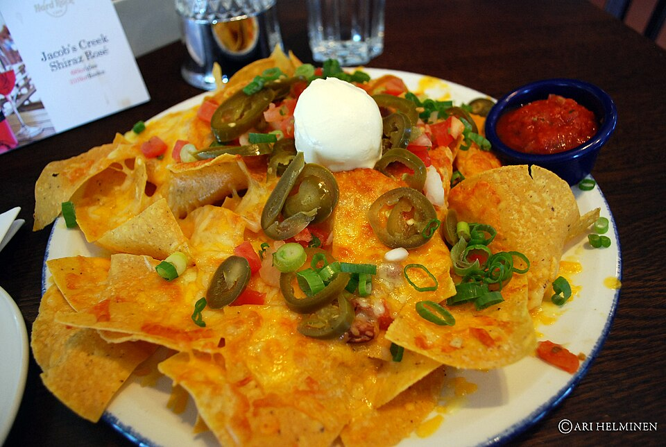

"Hot N' Bothered" Flatbread
Our fan-favorite flatbread pizza balances the spicy crunch of pepperoni and pickled jalapeños with the rich indulgence of hot honey and whole milk mozzarella.
Unlike traditional breweries where food is an afterthought, Town Brewing Company features a dedicated scratch kitchen. Our culinary team hand-stretches dough for our blistered flatbreads, simmers our rich beer cheese using our own craft IPAs, and bakes giant Bavarian pretzels to order.

Fresh dough fermentation, scratch sauces, and premium toppings.
Our fan-favorite flatbread pizza balances the spicy crunch of pepperoni and pickled jalapeños with the rich indulgence of hot honey and whole milk mozzarella.
Made fresh daily by reducing our flagship Escape Plan IPA with sharp cheddar and spices, creating a velvety sauce for our nachos and warm Bavarian pretzels.
Assembled carefully across multiple layers so every bite gets seasoned black beans, corn salsa, jalapeños, melted cheese, and tangy cilantro crema.